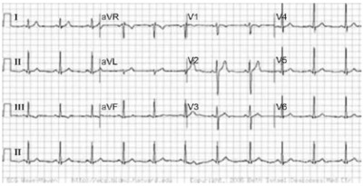
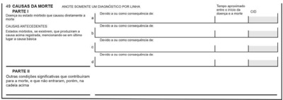
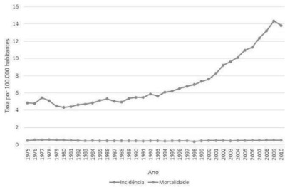
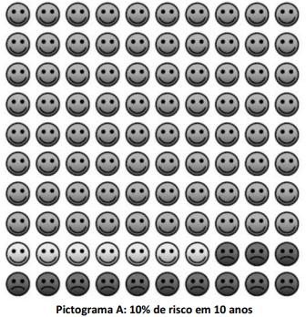
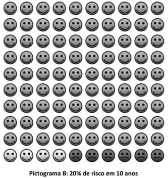
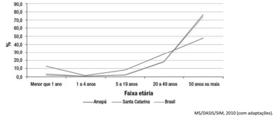

Questão 1 · Fisiopatologia · Neurologia · Fatores de Risco e Predisponentes · 4000184529Um paciente de 79 anos de idade foi internado para realizar procedimento eletivo de colocação de prótese em joelho direito. No terceiro dia de internação, passou a apresentar quadro de utuação do nível de consciência e pensamento desorganizado, com dificuldade para manter atenção nas conversas com os enfermeiros e com os médicos. Com base nesse caso clínico, assinale a alternativa correta.
A Trata-se, provavelmente, de um quadro infeccioso, devendo-se iniciar antibioticoterapia empírica e solicitar a realização de exames laboratoriais de rastreio infeccioso.
B Deve-se realizar um exame de neuroimagem, podendo ser ressonância nuclear magnética ou tomografia computadorizada de crânio. Caso os exames não apresentem alteração, deve-se realizar a coleta de líquor.
C Esse quadro é comum em idosos internados que possuem o diagnóstico de doença de Alzheimer. Dessa forma, pode-se inferir que, provavelmente, o paciente possui esse diagnóstico.
D Trata-se de uma síndrome clínica que pode ocorrer em idosos internados. No entanto, essa condição não impede a alta hospitalar, caso sejam investigados e afastados os principais fatores desencadeantes.
E O paciente deve ser encaminhado para a unidade de terapia intensiva até esclarecimento diagnóstico do motivo da confusão mental.
Questão 2 · Cardiologia · 4000184528Assinale a alternativa que apresenta o per l esperado para um paciente com insu ciência cardíaca que chega ao pronto- socorro dispneico, taquipneico, hipotenso e com edema de membros inferiores.
A quente e úmido
B seco e úmido
C frio e úmido
D quente e seco
E inclassificável
Questão 3 · Endocrinologia · 4000184527Assinale a alternativa que apresenta condições clínicas para o diagnóstico de síndrome metabólica.
A LDL elevado, resistência insulínica, hipertensão arterial sistêmica
B HDL baixo, hipertrigliceridemia, diabetes
C LDL elevado, hipertrigliceridemia, hipertensão arterial sistêmica
D insuficiência cardíaca, diabetes e hipertensão arterial sistêmica
E esteatose hepática, hipertrigliceridemia, diabetes
Questão 4 · Tratamento f armacológico da insuf iciência cardíaca com f ração de ejeção reduzida · Cardiologia · 4000184526Acerca do tratamento de insuficiência cardíaca de fração de ejeção reduzida, assinale a alternativa correta.
A O tratamento é focado no controle do edema de membros inferiores, sendo realizado com base no uso de diurético.
B Além do uso de inibidores do sistema renina-angiotensina-aldosterona, a anticoagulação é frequentemente utilizada para o tratamento dessa condição clínica.
C Esse tratamento atua contra o remodelamento cardíaco, sendo utilizados os inibidores do sistema renina- angiotensina-aldosterona e, sempre que possível, associados aos bloqueadores do sistema renina-angiotensina- aldosterona.
D Por se tratar de uma doença de caráter progressivo e irreversível, o foco do tratamento é na qualidade de vida do paciente, sendo indicado o uso de digitálico para o controle de sintomas, principalmente dos edemas de membros inferiores.
E O tratamento visa a atuar no processo de remodelação cardíaca e de vasodilatação, atenuando os sintomas e concedendo sobrevida ao paciente.
Questão 5 · Avaliação inicial · Cardiologia · 4000184525Um paciente de 35 anos de idade, sem comorbidades, procura o pronto-socorro devido a dor torácica, iniciada há 6 horas, em hemitórax esquerdo, de forte intensidade, tipo parestesia, associada a cólica, sem irradiação. Ele nega ter tido episódios prévios semelhantes. O paciente foi admitido diretamente para a sala de emergência, onde apresentava pressão arterial (PA) de 120 mmHg x 80 mmHg. Lá, foi realizado o eletrocardiograma (ECG) apresentado a seguir e o paciente foi medicado conforme o protocolo de dor torácica. Após a avaliação do ECG, decidiu-se realizar curva de troponina na primeira, terceira e sexta horas, a qual não apresentou variação em relação aos valores de normalidade. Com base nesse caso clínico, considerando que o paciente se encontra assintomático e com sinais vitais estáveis, assinale a alternativa correta, com relação à melhor conduta diante do caso apresentado.

A Deve-se encaminhar o paciente ao setor de hemodinâmica em caráter de urgência, uma vez que o paciente apresentou um infarto agudo do miocárdio com supra de ST, não visualizado pelo colega anterior.
B Deve-se encaminhar para realização de cateterismo cardíaco, pois o paciente apresentou ECG com infarto agudo do miocárdio recente, que evoluiu para sequela de contratilidade e, nesse caso, realizar exame precocemente pode auxiliar no manejo do miocárdio atordoado.
C Deve-se internar o paciente na unidade coronariana e seguir com monitoramento de troponina e programar cateterismo em até 72 horas.
D Deve-se investigar outras causas que possam justificar o quadro clínico e, na ausência de achado relevante, encaminhar o paciente para o seguimento ambulatorial.
E É desnecessário realizar maiores investigações, sendo indicados a alta hospitalar e o encaminhamento ao psiquiatra devido ao diagnóstico de distúrbio neurovegetativo.
Questão 6 · Cuidados paliativos · 4000184524Acerca dos conceitos de distanásia, eutanásia e ortotanásia, assinale a alternativa correta.
A Distanásia refere-se ao do processo de prolongar a vida de um enfermo incurável de forma artificial, sem trazer benefícios a ele.
B Eutanásia refere-se ao do processo de antecipar a morte, muito utilizado em pacientes sob cuidados paliativos, e visa a aliviar o sofrimento gerado por sintomas refratários.
C Ortotanásia é o processo de cuidados médicos relativo à medicina ortomolecular, em que não há uso de medicação.
D Eutanásia é o processo de decisão de conduta médica com base no paciente, sendo ele o ator principal na decisão terapêutica, daí o prefixo
E Distanásia ocorre quando o paciente, em fase final de vida, apresenta uma dissociação clínico-laboratorial, que permite gerar insegurança sobre a real condição clínica do paciente.
Questão 7 · Nef rologia · 4000184523Considerando que a hipertensão arterial sistêmica pode levar à insu ciência renal crônica, assinale a alternativa que apresenta o principal mecanismo responsável por esse processo.
A esclerose glomerular
B fibrose intersticial
C isquemia
D hipertensão glomerular
E hiperfiltração glomerular
Questão 8 · Nef rologia · 4000184522Acerca do uso de
A A creatinina é uma toxina presente no sangue decorrente do metabolismo muscular e de eliminação renal. O acúmulo dessa substância representa um risco à saúde do paciente, sendo indicada diálise de urgência, caso seja detectado.
B O uso do
C Trata-se da melhor opção para estimar o clearance renal, uma vez que sua depuração no organismo é 100% renal.
D A dosagem de creatina urinária é o padrão-ouro para a estimativa de filtração glomerular.
E Trata-se de uma boa opção, uma vez que a mensuração do
Questão 9 · Manif estações clínicas · 4000184521Assinale a alternativa que apresenta a associação correta entre propedêutica clínica e possível diagnóstico.
A exoftalmia — cirrose hepática
B estertor crepitante fino — diabetes melito tipo 1
C nistagmo vertical — pancreatite
D anasarca — hipotireoidismo
E diminuição do reflexo patelar — insuficiência cardíaca de fração de ejeção preservada
Questão 10 · Exame f isico · Cardiologia · Sopros diastólicos · 4000184520Assinale a alternativa que apresenta o achado propedêutico esperado em um paciente com estenose mitral grave.
A reforço pré-sistólico + sopro holossistólico
B reforço pré-sistólico + ruflar diastólico
C reforço pré-sistólico + estalido de abertura mitral
D quarta bulha do VE + hiperfonese de B2
E terceira bulha do VE + estalido de abertura mitral
Questão 11 · Reumatologia · Avaliação dos pacientes com monoartrite · Gota · 4000184519Um homem de 35 anos apresenta uma artrite aguda monoarticular envolvendo o 1º pododáctilo. Com base nessa situação, assinale a alternativa que apresenta a principal hipótese diagnóstica.
A artrite reumatoide
B artrite gonocócica
C lúpus eritematoso sistêmico
D traumatismo
E gota
Questão 12 · Classif icação de ChildPugh · 4000184518A classificação de Child-Pugh é amplamente utilizada na avaliação hepática. Assinale a alternativa que apresenta os marcadores contemplados por essa classificação.
A AST e ALT, encefalopatia e edema
B fosfatase alcalina, AST e hipertensão portal
C gama GT, desidrogenase láctica e encefalopatia
D bilirrubinas totais e frações e fosfatase alcalina
E tempo de protrombina e albumina
Questão 13 · Reumatologia · Espondilite Anquilosante · 4000184517Em relação à espondilite anquilosante, assinale a alternativa correta.
A Ela se manifesta exclusivamente em mulheres.
B As articulações periféricas são sempre preservadas.
C Ela pode estar associada ao antígeno de histocompatibilidade HLA-B27.
D No teste de Schoeber, o paciente apresenta maior flexão anterior à coluna lombar.
E O fator reumatoide é positivo.
Questão 14 · Quadro clínico da leucemia linf oide crônica LLC · 4000184516Assinale a alternativa que apresenta alterações que podem ser provocadas pela leucemia linfocítica crônica.
A anemia com presença de linfoblastos
B hipogamaglobulinemia e plaquetopenia
C Coombs direto positivo e trombocitopenia
D presença de restos celulares e linfopenia
E pico monoclonal e leucocitose com desvio à esquerda escalonado
Questão 15 · Neurite Óptica · Neurologia · 4000184515A causa mais frequente de neurite ótica retrobulbar em uma mulher de 31 anos de idade é
A tóxica.
B isquêmica.
C infecciosa viral.
D desmielinizante.
E infecciosa bacteriana.
Questão 16 · Inf ectologia · Etiologia e f atores de risco · 4000184514O agente etiológico mais comum nas endocardites é
A hepatite.
B coxsackie
C sarampo.
D varicela.
E poliomielite.
Questão 17 · Fisiopatologia · Cirurgia · 4000184513Assinale a alternativa que apresenta a causa de apendicite aguda mais comumente encontrada em adultos.
A verminose
B neoplasia
C criptogênica
D hiperplasia linfoide
E obstrução por fecálitos
Questão 18 · Fraturas da Coluna Vertebral · 4000184512A fratura do enforcado
A consiste na fratura do áxis.
B é uma lesão de bom prognóstico.
C é uma lesão de péssimo prognóstico.
D evolui, quase sempre, com paraplegia.
E é a fratura da
Questão 19 · Cirurgia · Fios de Sutura · 4000184511Com relação aos fios cirúrgicos, assinale a alternativa correta.
A O fio de seda é feito a partir do bicho Bombyx mori.
B Os fios de algodão são fibras trançadas de algodão e poliéster.
C A polidioxanona é um fio sintético trançado, sendo de absorção lenta.
D Os fios de ácido poligaláctico são ideais para a síntese cutânea.
E O fio de Catgut é feito a partir do intestino de gatos de laboratório.
Questão 20 · Neoplasias Malignas do Esôf ago · Adenocarcinoma de Esôf ago · 4000184510As lesões tumorais da transição esofagogástrica são mais comumente
A tumores epidermoides.
B tumores adenoescamosos.
C tumores adenocísticos.
D adenocarcinomas.
E tumores estromais gastrointestinais (GISTs, na sigla em inglês).
Questão 21 · Inf ectologia · 4000184509Assinale a alternativa que apresenta uma cirurgia considerada limpa.
A herniorrafia inguinal
B gastrectomia
C ressecção transuretral (RTU) de próstata
D traquioplastia
E cistectomia
Questão 22 · Hérnias Ventrais · Cirurgia · 4000184508Com relação à técnica de separação anterior dos componentes para tratamento de hérnias ventrais, assinale a alternativa correta.
A Essa técnica também é chamada de técnica de Ramirez.
B Nessa técnica, realizam-se sessões relaxadoras na aponeurose do oblíquo externo 2 cm medial à linha semilunar bilateralmente.
C Essa técnica permite um ganho total de até 5 cm na linha média.
D O músculo reto abdominal é desinserido lateralmente.
E A prótese de politetrafluoretileno expandido (PTFE) é a prótese preferencialmente aceita para a realização dessa técnica.
Questão 23 · Temas Gerais em Cirurgia · Cirurgia · 4000184507Assinale a alternativa que apresenta um afastador autoestático.
A Finochietto
B Volkmann
C Balfour
D Doyen
E Farabeuf
Questão 24 · Temas Gerais em Cirurgia · Cirurgia · 4000184506A sutura de Lembert é
A usada na sutura do parênquima pulmonar.
B invaginante.
C adequada para síntese hepática.
D usada em coledocorrafias.
E usada na síntese da aponeurose.
Questão 25 · Apendicetomia Aberta x Apendicectomia Laparoscópica · Cirurgia · 4000184505Quanto à técnica operatória em cirurgias de apendicite aguda, assinale a alternativa que apresenta corretamente os locais das punções dos trocateres na técnica laparoscópica.
A três punções de 5 mm: duas à esquerda e uma à direita.
B uma punção na região periumbilical de 10 mm, uma de 5 mm no hipogástrio e uma de 12 mm no flanco esquerdo.
C uma punção de 10 mm no flanco esquerdo, uma de 5 mm no umbigo e uma de 12 mm no hipogástrio.
D duas punções de 10 mm no umbigo e no hipocôndrio direito e uma de 5 mm no flanco esquerdo.
E uma punção de 10 mm no umbigo, uma de 5 mm no hipogástrio e uma de 12 mm no hipocôndrio direito.
Questão 26 · Neoplasias Malignas do Esôf ago · Cirurgia · 4000184504A técnica de esofagectomia com reconstrução de trânsito com anastomose gastroesofágica intratorácica denomina-se
A Ivor Lewis.
B Braun.
C Marischino.
D Billroth.
E Meyers.
Questão 27 · Tratamento Cirúrgico da DRGE · Cirurgia · 4000184503Na técnica de
A à esquerda do esôfago.
B no corpo gástrico.
C posteriormente ao esôfago.
D anteriormente ao esôfago.
E à direita do esôfago.
Questão 28 · Gastroenterologia · 4000184502O tumor de Frantz
A acomete principalmente o corpo e(ou) a cauda pancreática.
B é um tumor cístico.
C acomete principalmente o processo uncinado.
D comporta-se, geralmente, de modo bem agressivo.
E acomete, preferencialmente, homens negros.
Questão 29 · Tratamento das Hérnias Inguinais · Cirurgia · 4000184501A técnica de Wantz é
A própria para o tratamento das hérnias de Petit.
B uma boa opção no tratamento de hérnias paraestomais.
C proibitiva, devido à alta taxa de recidiva.
D preferida no tratamento de hérnias ventrais.
E usada nas recidivas inguinais.
Questão 30 · Classif icação de ClavienDindo · Cirurgia · 4000184500Na classificação de Clavien-Dindo, paciente que evolui a óbito enquadra-se no grau
A I.
B IV.
C V.
D VI.
E VII.
Questão 31 · Incidentaloma Adrenal · Cirurgia · 4000184499Incidentalomas são, geralmente,
A carcinomas.
B adenocarcinomas.
C lipomas.
D metástases.
E adenomas.
Questão 32 · Gastroenterologia · 4000184498Assinale a alternativa que apresenta o sintoma/sinal mais frequente na síndrome carcinoide.
A hiperqueratose
B broncoespasmo
C cardiopatia
D diarreia
E vômitos
Questão 33 · Endocrinologia · 4000184497Um paciente do sexo masculino, de 15 anos de idade, vai à consulta acompanhado de sua mãe, encaminhado pelo pediatra, por conta de alteração em exames da tireoide. Está sem queixas, eutró co; teve crescimento adequado dentro do canal familiar e bom desenvolvimento neuropsicomotor. Não apresenta bócio ao exame físico. Traz os seguintes resultados de exames: TSH = 7,2 ui/mL (valor de referência = 0,45 a 4,5 mUI/L), T4 livre = 1,1 (valor de referência = 0,9 a 1,7 ng/dL), glicemia = 92 mg/dL, colesterol total, LDL, HDL, triglicérides. Nesse caso, a conduta adequada é
A iniciar levotiroxina sódica na dose de 1,0 mcg/Kg.
B iniciar levotiroxina sódica na dose de 1,6 mcg/Kg.
C repetir TSH e T4 livre e solicitar TRAB para confirmar diagnóstico de hipertireoidismo.
D repetir TSH e T4 livre e solicitar anti-tireoperoxidase e anti-tireoglobulina.
E solicitar cintilografia de tireoide.
Revisar: possível letra faltando em enunciado
Questão 34 · Endocrinologia · 4000184496Com relação a diabetes melito e assuntos correlatos, assinale a alternativa correta.
A Doença celíaca é a doença autoimune mais prevalente em pacientes portadores de diabetes melito tipo 1.
B O exame de fundo de olho para triagem de retinopatia diabética deve ser solicitado no momento do diagnóstico para todos os pacientes portadores de diabetes melito tipo 1.
C A terapia insulínica no paciente portador de diabetes melito tipo 1 visa a mimetizar a secreção fisiológica e deve ser composta por dois componentes: insulina basal e insulina prandial.
D Análogos de insulina de ação rápida são contraindicados para o tratamento de diabetes melito tipo 1 na população pediátrica.
E Em crianças portadoras de diabetes melito tipo 1, a dose de insulina basal no sistema de infusão contínua de insulina deve ser superior a 60% da dose total diária de insulina.
Questão 35 · Pediatria · Endocrinologia pediátrica · 4000184495Assinale a alternativa correta acerca dos seguintes temas: síndrome de Cushing, obesidade na população pediátrica, crianças com dislipidemia familiar homozigótica, deficiência de leptina e hipoglicemia transitória neonatal.
A Crianças com síndrome de Cushing cursam com obesidade, alta estatura e avanço de idade óssea.
B Z escore do IMC acima de 2 desvio-padrão define obesidade na população pediátrica menor de 5 anos.
C Crianças com colesterol LDL acima de 110 mg/dL devem ser investigadas quanto à dislipidemia familiar homozigótica.
D Deficiência de leptina é a causa mais comum de obesidade monogênica.
E Prematuridade, retardo de crescimento intrauterino e ser filho de mãe diabética são causas de hipoglicemia transitória neonatal.
Questão 36 · Sepse neonatal · 4000184494A sepse neonatal é uma condição de importante morbimortalidade no período neonatal. Em relação à sepse neonatal precoce, assinale a alternativa correta.
A A profilaxia com antibioticoterapia durante o trabalho de parto em gestantes com cultura vaginal e retal positivas para estreptococo do grupo B não está mais indicada.
B A sepse neonatal precoce é aquela que ocorre após 72 horas do nascimento.
C Corioamnionite materna não é considerada um fator de risco para o recém-nascido.
D Os sintomas clínicos são altamente específicos para sepse neonatal e não podem ser confundidos com outras causas não infecciosas.
E Rotura de membranas ovulares por tempo igual ou superior a 18 horas antes do parto é um fator de risco importante.
Questão 37 · Teste do coraçãozinho · 4000184493Um médico está responsável pelo alojamento conjunto e avalia um recém-nascido (RN) de 60 horas de vida, nascido de parto normal, com idade gestacional de 38 semanas e peso ao nascer de 3.580 g; mãe e RN sem comorbidades. Teste da oximetria (“coraçãozinho”) com resultado MSD de 92% e MMI de 94%. Assinale a alternativa que apresenta a conduta adequada para esse caso clínico.
A dar alta hospitalar com encaminhamento para o cardiologista, pois o teste da oximetria está alterado.
B dar alta hospitalar com retorno ambulatorial, pois o teste da oximetria está normal.
C solicitar ecocardiograma e suspender alta hospitalar.
D repetir o teste da oximetria após 1 hora.
E dar alta hospitalar e solicitar ecocardiograma ambulatorialmente.
Questão 38 · Icterícia neonatal · 4000184492A icterícia é um dos sinais mais frequentes no período neonatal e apresenta-se como a coloração amarelada da pele, da esclera e das membranas mucosas, indicando aumento da bilirrubina sérica com acúmulo de bilirrubina nos tecidos. Em relação à icterícia neonatal, assinale a alternativa correta.
A Perda de peso acima de 10% do peso do nascimento na primeira semana de vida é um fator de risco importante para hiperbilirrubinemia significante.
B A icterícia fisiológica costuma ter início nas primeiras 24 horas de vida.
C A icterícia fisiológica apresenta um alto risco de evolução para encefalopatia bilirrubínica e necessita de tratamento imediato.
D O predomínio de bilirrubina indireta é um dos sinais de icterícia patológica.
E A incompatibilidade materno-fetal ABO alerta para a possibilidade de icterícia hemolítica e ocorre em cerca de 20% das mães com tipagem sanguínea A ou B e feto O.
Questão 39 · Calendário do prematuro · 4000184491Acerca de imunizações em recém-nascidos prematuros, assinale a alternativa correta.
A Todos os bebês nascidos até 34 semanas devem receber palivizumabe.
B A resposta imune pode ser inferior quando comparada à do bebê de termo.
C As vacinas devem ser aplicadas de acordo com a idade corrigida.
D A vacina contra o rotavírus pode ser livremente aplicada, mesmo em ambiente hospitalar.
E Peso maior que 2.000 g não é mais considerado critério para aplicação da BCG.
Questão 40 · Emergências Pediátricas · Pediatria · 4000184490Uma criança de cinco anos de idade está rindo e brincando com seus irmãos. Momentos depois, a criança apresenta tosse com aumento assimétrico do peito. Nessa situação, a causa mais provável para o ocorrido é
A trauma
B obstrução das vias aéreas.
C asma grave.
D tamponamento cardíaco.
E edema agudo de pulmão.
Questão 41 · Acidente vascular encef álico · Crises álgicas · 4000184489A doença falciforme é uma das alterações genéticas mais frequentes no Brasil e faz parte de um grupo de doenças genéticas caracterizadas pela predominância da hemoglobina (Hb) S nas hemácias, sendo a anemia falciforme (Hb SS) o genótipo mais frequente. Em relação a essa patologia, assinale a alternativa correta.
A As crises álgicas são a principal causa de atendimento médico nos serviços de emergência para esses pacientes.
B A gravidade clínica é variável, mas as principais causas de morbimortalidade são resultado de hemorragias de difícil controle.
C O acidente vascular cerebral (AVC) é uma das causas de crise vaso-oclusiva com altos índices de morbimortalidade na doença falciforme, prevalecendo o AVC hemorrágico nesses pacientes.
D As infecções são frequentes na doença falciforme na infância. Elas se relacionam com a asplenia e sempre se manifestam como complicações graves.
E Não existe teste de triagem neonatal para essa patologia.
Questão 42 · Emergências Pediátricas Parada Cardiorrespiratória PCR e Arritmias na Emergência · Pediatria · 4000184488Assinale a alternativa que
A pontos torsades
B fibrilação ventricular
C taquicardia sinusal
D taquicardia ventricular
E fibrilação ventricular
Questão 43 · Pediatria · Asma · 4000184487Em relação ao protocolo de asma GINA 2022, assinale a alternativa correta.
A Devem ser sempre associados dois B2 agonistas de longa duração no tratamento da asma leve.
B A utilização de beta2-agonistas de curta duração (SABA) mais do que duas vezes por semana ao longo de um mês indica a necessidade de um tratamento de controle.
C Na avaliação de gravidade, a asma leve não tem indicação de tratamento medicamentoso profilático.
D O uso de corticoide inalatório (ICS) se restringe apenas à asma moderada e grave.
E Hemograma com eosinofilia está presente em todos os casos de asma grave.
Questão 44 · Quadro clínico da leucemia linf oide aguda LLA · Tratamento da leucemia linf oide aguda LLA · 4000184486Acerca das leucemias linfoides agudas (LLAs) na infância, julgue os itens a seguir. I. 70% das LLAs podem entrar em remissão com a utilização de corticoide. Caso se descon e desse diagnóstico, é indicado utilizar corticoterapia como primeira escolha. II. Cerca de 85% das LLAs são curáveis, desde que recebam quimioterapia conforme protocolo. Atrasos na administração da quimioterapia causam pouco impacto na chance de cura. III. Infecções oportunistas são relativamente comuns e, por essa razão, a pro laxia com sulfametoxazol e trimetropim para pneumocystis carinii IV. A chance de cura vem caindo ao longo dos anos, visto que se tem descoberto formas cada vez mais agressivas da patologia.
A Nenhum item está certo.
B Apenas o item I está certo.
C Apenas o item II está certo.
D Apenas o item III está certo.
E Apenas o item IV está certo.
Questão 45 · Pediatria · Prof ilaxia secundária · 4000184485No contexto de febre reumática, a pro laxia com penicilina benzatina a cada 21 dias é crucial para prevenção de recorrências do quadro. Quanto a esse assunto, assinale a alternativa correta.
A Pacientes sem cardite devem receber profilaxia secundária até 25 anos ou 10 anos após o último surto, o que cobrir maior período.
B Pacientes que apresentaram cardite prévia, mas que evoluíram com insuficiência mitral leve, residual ou com resolução da lesão valvar devem realizar profilaxia até 21 anos de idade ou 5 anos após o último surto, o que cobrir maior período.
C Pacientes com lesão valvar residual moderada a severa devem receber profilaxia secundária até 40 anos de idade ou até mesmo por toda vida.
D No caso de pacientes com cirurgia valvar, não há necessidade de profilaxia secundária.
E Todos os pacientes devem receber profilaxia secundária por 15 anos após o último surto, independentemente da presença de cardite.
Questão 46 · Aspectos Clínicos Quadro clínico e Diagnóstico · Pediatria · 4000184484Paciente do sexo masculino, com 5 anos de idade, apresentou febre por 8 dias associada a rash maculopapular, artralgia em membros inferiores, edema de mãos e pés, hiperemia de orofaringe e lábios, além de hiperemia conjuntival bilateral, laboratorialmente com provas inflamatórias elevadas, hemograma com anemia e leucocitose. Considerando o diagnóstico mais provável do caso clínico acima, assinale a alternativa correta.
A O tratamento consiste em administrar imunoglobulina endovenosa e AAS na dose de 30 a 50 mg/kg enquanto persistir o quadro febril. Após isso, deve ser iniciado AAS na dose de 3 a 5 mg/kg e deve ser mantido até a normalização do ecocardiograma e resolução da trombocitose.
B Quadro clínico e laboratorial é compatível com artrite idiopática juvenil (AIJ), devendo ser iniciada terapia com anti-inflamatórios não esteroidais e metotrexato.
C É mandatória a realização de ecocardiograma para investigação de aneurisma de coronária, sendo que o uso de imunoglobulina até o décimo dia de febre não diminui a incidência dessa complicação.
D Após o décimo dia da doença, o surgimento de aneurismas coronarianos se faz improvável, portanto apenas um ecocardiograma inicial é necessário.
E Não há evidência científica comprovando o benefício da imunoglobulina, sendo preferível apenas a pulsoterapia com metilprednisolona.
Questão 47 · Teste do pezinho · 4000184483De acordo com a Lei nº 14.154/2021, haverá ampliação do rol mínimo de patologias detectadas por meio do teste do pezinho pelo Sistema Único de Saúde (SUS), que entrou em vigor em maio de 2022. O processo para inserção das doenças na triagem neonatal será feito de forma gradual, conforme etapas previstas na Lei. Quanto a esse assunto, assinale a alternativa que apresenta corretamente qual será a primeira doença acrescentada na primeira etapa desse processo.
A hepatite B
B toxoplasmose congênita
C mielomeningocele
D galactosemias
E imunodeficiências primárias
Questão 48 · Nef rologia · 4000184482Um paciente do sexo masculino, com 6 anos de idade, apresenta queixa de edema de face há 15 dias, o qual progrediu para abdome e para membros inferiores há 7 dias. Ele relata diminuição do volume urinário e urina com aspecto de espuma. Nega quadro de febre, artralgia e cefaleia. Antecedentes pessoais: infecções de vias aéreas de repetição. Antecedentes familiares: avó materna com hipertensão arterial. Ao exame físico na entrada do pronto-socorro, apresenta bom estado geral, edema em face bipalpebral, acianótico, afebril, eupneico, ausculta cardíaca e respiratória sem alterações, abdome com ascite, sem visceromegalias, membros inferiores com edema bilateral de 2+/4+. Além disso, apresenta peso de 26 Kg (seu peso anterior ao edema era 19 de Kg), estatura de 110 cm, pressão arterial de 80 mmHg x 40mmHg. Foram realizados exames laboratoriais, que apresentaram hemograma normal, função renal normal, urina 1 com proteína 4+, albumina sérica de 2,0 g/dL. Com base no caso clínico apresentado, assinale a alternativa correta.
A A pressão arterial na pediatria é considerada normal sempre que estiver abaixo de 110 mmHg x 70 mmHg.
B O diagnóstico mais provável é glomerulonefrite pós-estreptocócica e o tratamento deve ser realizado com diuréticos.
C O diagnóstico mais provável é síndrome nefrótica, sendo indispensável solicitar biópsia renal antes de iniciar o tratamento.
D O diagnóstico mais provável é síndrome nefrótica e o tratamento inicial sempre é realizado com corticoides.
E O diagnóstico mais provável é de glomerulopatia pós-estreptocócica e o tratamento inicial deve ser realizado com corticoides.
Questão 49 · Índice de Pearl · 4000184481O índice de Pearl é utilizado para avaliar a e cácia dos vários métodos de anticoncepção. Em relação a esse índice, assinale a alternativa correta.
A Os métodos comportamentais, como o da tabela (ou Ogino-Knaus) e o da temperatura corpórea basal, têm índice de Pearl muito baixo, portanto têm alto risco de falha.
B O método de lactação e amenorreia, se utilizado corretamente nos primeiros nove meses pós-parto, tem alto índice de Pearl.
C O referido índice mede o número de falhas de um método em 100 casais após 2 anos de uso.
D O implante subdérmico de etonogestrel tem baixo índice de Pearl.
E O dispositivo intrauterino de cobre tem índice de Pearl melhor que o dispositivo de levonorgestrel.
Questão 50 · Câncer de Endométrio · 4000184480O câncer do endométrio tem aumentado bastante sua prevalência no Brasil, e sua compreensão e seu diagnóstico precoce são fundamentais para um melhor prognóstico. Em relação a esse assunto, assinale a alternativa correta.
A Os tumores estrogênio-dependentes têm prognóstico pior que os não dependentes.
B São considerados fatores de proteção para esse tipo de neoplasia: uso de anticoncepcional hormonal; tabagismo; atividade física; e uso de progestagênios.
C A colpocitologia oncológica é o principal exame de rastreio para o diagnóstico desse câncer.
D O adenocarcinoma endometrioide é o de pior prognóstico.
E Devido à melhora dos tratamentos clínicos para câncer, a quimioterapia e a radioterapia são os tratamentos de escolha nos estádios iniciais.
Questão 51 · Rastreamento do câncer de mama · 4000184479A medicina busca, com o avanço da tecnologia, o diagnóstico precoce do câncer da mama, que acomete milhares d e mulheres todos os anos, ao redor do mundo. Em relação aos exames de imagem com esse objetivo, assinale a alternativa correta.
A A ressonância nuclear magnética tem mais acurácia, mas deixou de ser utilizada em razão da grande irradiação que emite.
B Na definição das microcalcificações, a mamografia tem melhor acurácia que a ressonância magnética.
C A acurácia da ultrassonografia tridimensional é superior à acurácia da mamografia.
D Após a realização de mamografia, pode-se fazer a ultrassonografia; a ressonância, entretanto, está contraindicada.
E O sistema BI-RADS é específico para a mamografia, não podendo ser utilizado na ultrassonografia, nem na ressonância magnética.
Questão 52 · Câncer de colo do útero · 4000184478O carcinoma do colo uterino é bastante prevalente no Brasil, sendo mais preponderante nas regiões mais pobres. Apesar dessa alta prevalência, o diagnóstico precoce é maior a cada dia, em razão da propedêutica e da conscientização da população na busca pelos exames. Acerca dessa neoplasia, assinale a alternativa correta.
A O principal fator de risco para o desenvolvimento de lesões intraepiteliais de alto grau e do câncer do colo do útero é a infecção pelo papiloma vírus humano (HPV).
B São fatores de risco: sexarca precoce; multiparidade; múltiplos parceiros; diabetes; e hipertensão arterial.
C O tipo histológico mais comum é o adenocarcinoma.
D As metástases mais comuns são a hepática e a pulmonar, sendo essas as principais causas de óbito.
E A conização do colo uterino só está indicada nos estádios iniciais, estádios Ia e Ib.
Questão 53 · Desenvolvimento dos ductos genitais · 4000184477Uma paciente de 18 anos de idade, com queixa clínica de sangramento uterino anormal, realizou ultrassonografia transvaginal, que revelou a presença de útero septado ou bicorno. O médico solicitou histeroscopia ambulatorial para elucidação diagnóstica. Com base nesse caso clínico, assinale a alternativa correta.
A A conduta do médico foi correta, devendo-se aguardar o resultado para estabelecer a conduta terapêutica.
B O sintoma de sangramento uterino deve-se ao diagnóstico ultrassonográfico.
C É comum a associação de hiperplasia endometrial com anomalias dos dutos müllerianos.
D Deve-se tratar a paciente com indução de amenorreia até o desejo de gravidez.
E A histeroscopia não fará o diagnóstico diferencial entre útero septado e útero bicorno.
Questão 54 · Vaginose citolítica · Ginecologia · 4000184476Uma paciente com queixa clínica de corrimento esbranquiçado, ardor vulvovaginal intenso e prurido foi diagnosticada como portadora de vaginite citolítica. Considerando esse caso clínico, assinale a alternativa correta, a respeito desse diagnóstico.
A Trata-se de uma situação em que a proliferação de fungos vaginais é tão intensa que leva a citólise acentuada.
B A vaginite citolítica é causada pelo
C Na vaginite citolítica, o pH é ácido e a presença de lactobacilos está aumentada.
D Pelos critérios de Amsel, a paciente apresenta vaginose bacteriana.
E Drogas que podem ser utilizadas no tratamento dessa paciente incluem isoconazol, fenticonazol e nistatina.
Questão 55 · Tratamento · 4000184475Uma paciente de 38 anos de idade, com dois lhos vivos, dismenorreia intensa e sangramento uterino excessivo, foi diagnosticada como portadora de mioma submucoso de 2 cm. Na ultrassonogra a, constatou-se o seguinte: volume uterino de 110 cc; ovários normais. Assinale a alternativa que apresenta a melhor conduta nesse caso clínico.
A histerectomia, em razão de prole formada
B miomectomia histeroscópica
C tratamento prolongado com progestagênio, até o volume do mioma sofrer uma redução acentuada
D uso de análogo do GnRH, por 2 a 3 anos
E miomectomia videolaparoscópica
Questão 56 · Endometriose · 4000184474Uma das doenças mais prevalentes na mulher, durante o período reprodutivo, é a endometriose pélvica. Existem várias teorias etiopatogênicas e diversas possibilidades de tratamentos. Em relação a essa afecção, assinale a alternativa correta.
A Cerca de 90% das pacientes com endometriose têm útero retrovertido.
B A sintomatologia na endometriose profunda é cerca de quatro vezes maior que a da endometriose superficial.
C O uso de anticoncepcionais com estrogênio é contraindicado, pois esse hormônio estimula os focos ectópicos da doença.
D Essa afecção pode ser tratada com análogo e antagonista do GnRH.
E Nesses casos, a paciente é considerada curada quando, após cinco anos de tratamento, torna-se assintomática.
Questão 57 · Obstetrícia · 4000184473Em relação ao NIPT ( a alternativa correta.
A Trata-se de um exame com base na análise de DNA fetal livre no sangue materno que, em sua versão ampliada, pode avaliar o risco de algumas síndromes genéticas mais raras, como
B Trata-se de um teste bioquímico que avalia se o feto apresenta alto risco para aneuploidias nos cromossomos sexuais, como síndrome de Klinefelter (45,X) e de Turner (47,XXY).
C Trata-se de um exame com base na análise de DNA fetal livre no sangue materno que, em sua versão simples, pode avaliar se o feto apresenta alto risco de aneuploidias como a síndrome de Edwards (trissomia do 13) e síndrome de Patau (trissomia do 16).
D Trata-se de um exame com base na análise de DNA fetal livre no sangue materno, portanto não pode ser realizado em gestações gemelares.
E Trata-se de um exame genético que, pela análise do vilo corial, possibilita a cariotipagem por bandeamento G.
Questão 58 · Obstetrícia · 4000184472Acerca da toxoplasmose na gestação, assinale a alternativa correta.
A Nos casos de infecção aguda no terceiro trimestre (acima de 32 semanas), não é preconizada a administração de sulfadiazina, pirimetamina e ácido folínico sem a confirmação pré-natal da infecção fetal.
B A pirimetamina é agonista do ácido fólico, funcionando sinergicamente com a espiramicina no tratamento do feto contra taquizoítos de
C Durante o tratamento com sulfadiazina, pirimetamina e ácido folínico, deve-se solicitar ultrassonografia obstétrica com dopplervelocimetria da artéria cerebral média, devido à possibilidade de anemia fetal.
D Nos casos em que for confirmada a infecção fetal no primeiro trimestre, deve-se instituir imediatamente o tratamento com sulfadiazina, pirimetamina e ácido folínico.
E O uso de espiramicina em idade gestacional abaixo de 18 semanas deve ser evitado, devido à teratogenicidade.
Questão 59 · Síndrome do anticorpo antif osf olipídeo SAAF · Síndrome antif osf olípide SAF · 4000184471Quanto às trombo lias adquiridas, especi camente quanto à síndrome de anticorpos antifosfolípides (SAF), assinale a alternativa correta.
A Anticorpos antifosfolípides não trombogênicos podem surgir de forma transitória e fugaz durante a gestação, após infecções ou traumas.
B Um dos critérios laboratoriais que define a SAF é a verificação de deficiências das proteínas C e S em duas ou mais ocasiões, com intervalo mínimo de 3 semanas entre as coletas.
C Para se estabelecer o diagnóstico de SAF, deve-se verificar a presença dos polimorfismos da enzima metilenotetrahidrofolato redutase (MTHFR), que são altamente trombogênicos.
D O diagnóstico de SAF pode ser estabelecido quando verificada a mutação do Fator V (Fator V de Leiden).
E O critério laboratorial que define a SAF é a presença de anticorpo anti-
Questão 60 · Obstetrícia · 4000184470Paciente secundigesta, com antecedente de parto normal prematuro, idade gestacional de 22 semanas, por ocasião do exame ultrassonográ co transvaginal realizado na mesma oportunidade da avaliação morfológica do segundo trimestre, apresentou colo medindo 18 mm de comprimento. Ao exame de toque vaginal, o colo apresentava 1,5 cm de dilatação e estava 80% esvaecido. Assinale a alternativa que apresenta a conduta apropriada nesse caso clínico hipotético.
A iniciar tocólise com betamiméticos.
B prescrever corticoide intramuscular, progesterona natural via oral, em altas doses e orientar repouso.
C realizar cerclagem abdominal laparoscópica.
D realizar cerclagem via vaginal em caráter de urgência.
E iniciar tocólise com bloqueadores dos canais de cálcio.
Revisar: possível letra faltando em enunciado
Questão 61 · Obstetrícia · 4000184469Uma gestante com 8 semanas de gravidez viajou para visitar sua família na primeira semana de outubro. Ao retornar, foi avisada de que seu sobrinho, com quem teve contato muito próximo durante a estadia, teve febre e erupção facial de início súbito e confirmou diagnóstico de eritema infeccioso ou “quinta doença”. No momento, a paciente queixa-se de dor articular nos joelhos e tornozelos, que atribui à viagem longa. Assinale a alternativa que apresenta, respectivamente, a principal hipótese diagnóstica e a conduta a ser adotada nesse caso hipotético.
A infecção por vírus Zika — solicitar pesquisa de anticorpos maternos IgG e IgM específicos para esse arbovírus, prescrever analgésicos e tranquilizar a paciente.
B infecção por parvovírus B19 — solicitar pesquisa de anticorpos maternos IgM e IgG específicos, prescrever analgésicos e pedir que a paciente fique atenta ao aparecimento de outros sintomas
C infecção por coronavírus — solicitar teste rápido materno IgM e IgG para SARS-Cov-2, prescrever analgésicos e orientar a realização imediata da quarta dose da vacina.
D infecção por vírus Zika — solicitar reação em cadeia de polimerase com transcriptase reversa (RT- PCR), específico para esse arbovírus, no sangue materno, prescrever analgésicos e informar sobre o alto risco de infecção congênita.
E infecção por parvovírus B19 — solicitar pesquisa de anticorpos maternos e fetais IgM e IgG específicos, prescrever valaciclovir e informar sobre o alto risco de infecção congênita.
Questão 62 · Obstetrícia · 4000184468Uma puérpera, no décimo dia pós-operatório de parto por cesariana compareceu ao pronto atendimento da obstetrícia. Ao exame físico, apresentava a clássica tríade de Bumm. Assinale a alternativa que apresenta a hipótese diagnóstica nesse caso hipotético.
A colangite, pois a paciente apresentava icterícia, dor abdominal e febre.
B mastite, pois as mamas da paciente encontravam-se ingurgitadas, hiperemiadas e dolorosas .
C trombose de veia ovariana, pois o útero era desviado lateralmente, de consistência lenhosa e doloroso à mobilização.
D tamponamento cardíaco puerperal, pois a paciente apresentava diminuição da pressão arterial, abafamento das bulhas cardíacas e dilatação das veias do pescoço.
E endometrite puerperal, pois o útero era doloroso à mobilização, amolecido e hipoinvoluído.
Questão 63 · Obstetrícia · 4000184467Uma paciente secundigesta, com antecedente de parto por cesariana, com 40 semanas de gestação, encontrava-se em período expulsivo há uma hora. O trabalho de parto foi taquitócico, tendo evoluído em menos de 4 horas. Ao toque, revelou-se o seguinte: dilatação total; bolsa rota; OP em plano +2 de De Lee. Decidiu-se pela aplicação de vácuo-extrator para alívio materno-fetal, mas à locação observou-se subida da apresentação e sangramento uterino moderado. Também cessaram as contrações uterinas. Assinale a alternativa que apresenta, respectivamente, o provável diagnóstico e a conduta a ser adotada nesse caso hipotético.
A descolamento de placenta — aplicação do fórcipe de Simpson-Braun
B rotura uterina — parto por cesariana
C descolamento de placenta — manobra de Kristeller
D desproporção cefalopélvica — associação de vácuo-extração à manobra de Kristeller
E rotura uterina — aplicação do fórcipe de Kielland
Questão 64 · Obstetrícia · 4000184466Com relação ao adequado acompanhamento pré-natal de gestantes hipertensas, assinale a alternativa correta.
A O ganho de peso excessivo (maior que 500 mg por semana), assim como níveis séricos de ácido úrico superiores a 3mg/dL no primeiro trimestre, são fatores preditores de pré-eclâmpsia.
B A prescrição de ácido acetilsalicílico (AAS), 150 mg, via oral, diariamente, a partir da 20ª semana de gestação é uma medida preventiva de pré-eclâmpsia.
C Uma gestante que apresente proteinúria de 600 mg/24 horas em total de 1.500 mL de urina excreta uma concentração proteica aproximada de 100 mg/dL, que poderá não ser detectada nos testes com fitas reagentes
D A osmolaridade plasmática modifica-se durante a gravidez, devido à inativação do sistema renina-angiotensina- aldosterona e ao aumento do limiar para secreção de hormônio antidiurético (ADH).
E A medida de proteinúria na urina de 24 horas pode ser estimada utilizando-se a razão proteinúria/creatinúria em amostra isolada de urina.
Questão 65 · Medicina Preventiva · 4000184465Um homem de 75 anos de idade foi levado ao pronto-socorro mais próximo de sua casa com quadro de piora d a insu ciência cardíaca congestiva com dispneia súbita. Evoluiu a óbito três dias após a internação. Era tabagista (40 maços-ano). Teve diagnóstico de estenose de mitral aos 30 anos de idade e febre reumática na infância. A imagem a seguir mostra parte da declaração de óbito desse homem. Com base nesse caso, assinale a alternativa apresenta o melhor preenchimento dessa declaração de óbito.

A Parte I: a. insuficiência cardíaca; b. estenose de valva mitral; c. febre reumática; d. tabagismo.
B Parte I: a. dispneia intensa; b. estenose de valva mitral; c. tabagismo. Parte II: febre reumática.
C Parte I: a. insuficiência cardíaca; b. estenose de valva mitral; c. febre reumática. Parte II: tabagismo.
D Parte I: a. parada cardiorrespiratória; b. estenose de valva mitral; c. febre reumática; d. tabagismo.
E Parte I: a. insuficiência cardíaca; b. tabagismo; c. febre reumática; d. tabagismo.
Questão 66 · Medicina Preventiva · 4000184464A participação social e a gestão compartilhada são pilares fundamentais do Sistema Único de Saúde (SUS). Com relação a esse assunto, assinale a alternativa que apresenta as instâncias existentes para a efetuação dos citados pilares.
A conferências de saúde, conselhos municipais de saúde, secretários municipais de saúde e prefeitos.
B prefeitos, governadores e ministro da saúde.
C conferências de saúde, conselho estadual de saúde, secretário estadual de saúde e governador do estado.
D conferências de saúde, conselhos de saúde e comissões de intergestores nas esferas federal, estadual e regional.
E prefeitos e ministro da saúde.
Questão 67 · Medicina Preventiva · 4000184463O programa Previne Brasil, instituído pela Portaria nº 2.979/2019, é um novo modelo de nanciamento para a atenção primária à saúde (APS), o qual altera algumas formas de repasse do nanciamento para os municípios, que passam a ser distribuídos com base em três critérios: captação ponderada, pagamento por desempenho e incentivo para ações estratégicas. Os indicadores de desempenho incluem o(a)
A proporção de crianças que realizaram teste do pezinho.
B percentual de diabéticos que realizaram fundoscopia anualmente.
C percentual de mamografias e exames de rastreio de próstata realizados.
D proporção de gestantes que realizaram pelo menos 10 consultas de pré-natal.
E percentual de hipertensos acompanhados com pressão arterial aferida em cada semestre.
Questão 68 · Medicina Preventiva · 4000184462Um pro ssional médico atende, pela primeira vez, via telemedicina, um rapaz de 23 anos de idade, assintomático, sem patologias de base, que solicita “troca” de pedido de exames de sangue e urina com 48 itens, feito por pro ssional nutricionista. Refere que o laboratório e o convênio não aceitam pedido de nutricionista. O médico a rma que não se sente confortável em realizar essa “troca” de guia, pois acredita que a maioria dos exames pedidos não tem indicação clínica. Nesse caso hipotético, de acordo com o Código de Ética Médica, o médico
A deve acatar a solicitação, pois, no processo de tomada de decisões profissionais, de acordo com seus ditames de consciência e as previsões legais, o médico aceitará as escolhas de seus pacientes relativas aos procedimentos diagnósticos e terapêuticos por eles expressos, desde que adequadas ao caso e cientificamente reconhecidas.
B não deve acatar a solicitação, pois é vedado ao médico delegar a outros profissionais atos ou atribuições exclusivas da profissão médica.
C deve acatar a solicitação, pois é vedado ao médico deixar de garantir ao paciente o exercício do direito de decidir livremente sobre sua pessoa ou seu bem-estar, bem como exercer sua autoridade para limitá-lo.
D tem o direito de não acatar a solicitação, pois é vedado ao médico praticar ou indicar atos médicos desnecessários ou proibidos pela legislação vigente no País.
E não deve acatar a solicitação, pois deve recusar-se a realizar atos médicos que, embora permitidos por lei, sejam contrários aos ditames de sua consciência.
Questão 69 · Pneumologia · Rastreio populacional · 4000184461Um homem de 65 anos de idade procura um médico de família para exames de rotina. Está assintomático, tem história familiar de câncer de pulmão e é tabagista (15 maços-ano, atualmente 10 cigarros/dia). Solicita pedido de radiogra a de tórax, pois está preocupado com câncer de pulmão. Apresenta-se em fase de pré-contemplação no ciclo de DiClemente-Prochaska. Nesse caso, a conduta mais correta diante dessa solicitação é
A solicitar a radiografia de tórax, pois existe chance de câncer de pulmão.
B solicitar uma tomografia de baixa dosagem (TCBD), pois é mais efetiva que a radiografia de tórax.
C não solicitar radiografia de tórax: existe o risco do exame vir normal e ocorrer o efeito de “falsa segurança”.
D solicitar tomografia de tórax simples, sem contraste.
E solicitar uma TCBD, por haver indicação para esse rastreio e para não se romper um vínculo de cuidado.
Questão 70 · Vacinas contra poliomielite · 4000184460Acerca da vacina contra a poliomielite, assinale a alternativa correta.
A A vacina inativada contra a poliomielite foi introduzida em 2012 com duas doses, mas foi ampliada para três doses em 2016.
B O Programa Nacional de Imunizações (PNI) recomenda que as doses de vacina inativada sejam administradas aos 2, 4 e 6 meses de idade, conferindo uma imunidade que só é reforçada aos 4 e aos 6 anos de idade, com as gotinhas da vacina oral.
C Depois de 2016, a cobertura vacinal caiu para menos de 80%, chegando a 74,19% no ano de 2019.
D As três doses da vacina intramuscular deixam as crianças protegidas contra dois dos três sorotipos do poliovírus, enquanto as gotinhas imunizam apenas contra um deles.
E Se uma criança tomou uma vacina e ficou três anos sem receber nenhuma outra dose, ela precisa recomeçar o esquema do zero.
Questão 71 · Medicina Preventiva · 4000184459O gráfico a seguir refere-se às taxas de incidência e mortalidade do câncer de tireoide nos Estados Unidos entre os anos de 1975 e 2010. Howlader Por sua magnitude e suas consequências para a saúde, o sobrediagnóstico é considerado um dano muito relevante associado ao rastreamento de câncer de tireoide. Com relação a esse assunto, assinale a alternativa correta, com base no gráfico acima.

A Sobrediagnóstico consiste no aumento do número de casos de câncer que comumente se observa após a introdução de programas de rastreamento de doenças.
B O fato de a incidência de câncer de tireoide ter aumentado após a realização frequente de ultrassonografias na população americana comprova que o programa de rastreio teve sucesso.
C Um aspecto que chama atenção para o sobrediagnóstico é a manutenção das taxas de mortalidade após o aumento do número de ultrassonografias e da incidência de câncer de tireoide.
D Por definição, um programa de rastreamento de câncer deve acontecer quando sinais e(ou) sintomas sugestivos estão presentes.
E Sobrediagnóstico é a classificação inadequada de um tumor que, na verdade, é benigno.
Questão 72 · Medicina Preventiva · 4000184458Pictogramas são recursos gráficos que objetivam transmitir informações com clareza e facilitar a comunicação médico- paciente, de modo a permitir uma tomada de decisão compartilhada e mais adequada. Encontram-se a seguir dois pictogramas (A e B) que objetivam mostrar o provável benefício da atorvastatina na redução de risco de doença cardiovascular (DCV) em pacientes com risco calculado de 10% e 20% de evento cardiovascular nos próximos 10 anos. Considere-se a seguinte legenda: de 100 pessoas, as que estão indicadas por correspondem àquelas que não teriam evento cardiovascular; as indicadas por correspondem às pessoas que teriam; e as indicadas por correspondem às pessoas beneficiadas pelo uso da atorvastatina. Statins to reduce the risk of CHD and stroke: patient decision aid. Copyright © NICE 2014 (com adaptações). Com base nessas informações, assinale a alternativa correta, considerando os pictogramas apresentados.


A O pictograma A mostra que, se todas as 100 pessoas tomarem atorvastatina por 10 anos, ao longo desse tempo, em média, 6 pessoas serão salvas de desenvolver DCV.
B O benefício do uso da atorvastatina é maior nos pacientes com maior risco cardiovascular.
C O pictograma B mostra que a chance de evento cardiovascular é de 13% mesmo em quem não usa estatina.
D A atorvastatina praticamente zera o risco de evento cardiovascular quando adequadamente utilizada.
E O benefício da estatina é muito pequeno; por isso, não vale a pena seu uso.
Questão 73 · Medicina Preventiva · 4000184457No que se refere à qualidade de avaliação dos testes diagnósticos, assinale a alternativa correta.
A A propriedade que define a proporção de não doentes entre os indivíduos que têm um teste negativo é a especificidade.
B Para a triagem de bolsas de sangue, são desejáveis testes com baixa sensibilidade.
C A propriedade mais adequada a ser avaliada para interpretar um exame positivo é a sensibilidade.
D Testes em série melhoram a especificidade do diagnóstico.
E O aumento da prevalência de uma doença na população diminui o valor preditivo positivo de um teste diagnóstico.
Questão 74 · Medicina Preventiva · 4000184456Uma paciente de 84 anos de idade, hipertensa e diabética, sofreu acidente cerebrovascular isquêmico, apresentando hemiparesia há 2 anos e deambulando com apoio de muleta. Nesse caso hipotético, a tentativa de retirada de uso frequente de Vertix corresponde ao(s) seguinte(s) nível(is) de prevenção:
A primária e secundária.
B secundária e terciária.
C quaternária.
D secundária.
E primária.
Questão 75 · Medicina Preventiva · 4000184455Na avaliação de dois pacientes tabagistas, um de 22 anos de idade e outro de 64 anos de idade, ambos assintomáticos, mas com nódulo pulmonar solitário de 1,2 cm, deve-se considerar que a probabilidade de câncer pulmonar é maior para o idoso, pois
A o valor preditivo negativo do teste não depende da especificidade do teste.
B o número de falsos-positivos é o mesmo nas duas faixas etárias.
C a sensibilidade do teste varia conforme a faixa etária.
D o valor preditivo positivo do teste é maior na população com maior prevalência.
E o valor preditivo negativo do teste não depende da sensibilidade do teste.
Questão 76 · Medicina Preventiva · 4000184454Deve-se levar em consideração os conceitos de e cácia, efetividade e e ciência ao se tomar a decisão de incorporar uma nova tecnologia no sistema de saúde nacional. Em relação a tais conceitos, assinale a alternativa correta.
A Eficácia refere-se ao resultado de uma intervenção aplicada em larga escala na prática cotidiana.
B Eficiência refere-se à possibilidade de atingir um resultado independentemente dos custos envolvidos.
C Efetividade refere-se ao resultado de uma intervenção realizada em condições controladas, como nos ensaios clínicos controlados.
D Eficiência é a qualidade daquilo que cumpre com as metas planejadas, ou seja, é uma característica pertencente às pessoas que alcançam os resultados esperados.
E Efetividade refere-se ao resultado de uma intervenção aplicada sob as condições habituais da prática médica.
Questão 77 · Medicina Preventiva · 4000184453As curvas apresentadas no gráfico acima são denominadas

A curvas de Nelson de Moraes (mortalidade proporcional por idade).
B índice de Swaroop-Uemura (mortalidade proporcional).
C curvas de fecundidade proporcional por idade.
D curvas de óbitos por afecções crônico-degenerativas em uma população.
E curvas de incidência de covid-19 por idade.
Questão 78 · Medicina Preventiva · 4000184452Considerando-se as alternativas a seguir, é correto a rmar que os fatores socioeconômicos têm maior influência no indicador de mortalidade
A neonatal.
B neonatal tardia.
C perinatal.
D pós-neonatal.
E geral.
Questão 79 · Medicina Preventiva · 4000184451Maria, de 45 anos de idade, trabalha sob contrato regular, sob a Consolidação das Leis do Trabalho (CLT), há 12 anos. Certo dia, enquanto ia ao trabalho, caminhando, sofreu um acidente automobilístico e sofreu fratura de fíbula esquerda. M aria procurou atendimento na unidade de pronto atendimento mais próxima e foi afastada do trabalho por seis semanas, apresentando recuperação parcial. Teve também indicação de fisioterapia por vinte sessões inicialmente. Nesse caso, o custeio da reabilitação física cabe ao(à)
A empresa empregadora.
B Sistema Único de Saúde (SUS).
C Instituto Nacional do Seguro Social (INSS).
D própria empregada, Maria, com recursos próprios.
E outro envolvido no acidente automobilístico.
Questão 80 · Medicina Preventiva · 4000184450Assinale a alternativa que apresenta as principais causas de morte por doenças crônicas não transmissíveis (DCNT) no Brasil em 2019. Respostas: 1 12 23 34 45 56 67 78
A doenças cardiovasculares (27%), neoplasias (17%), doenças respiratórias crônicas (12%) e diabetes (5%)
B doenças cardiovasculares (27%), neoplasias(17%), doenças renais crônicas (12%) e diabetes (5%)
C doenças cardiovasculares (27%), covid-19 (17%), doenças renais crônicas (12%) e obesidade (5%)
D doenças cardiovasculares (27%), covid-19 (17%), neoplasias (12%) e obesidade (5%)
E doenças cardiovasculares (27%), covid-19 (17%), neoplasias (12%) e doenças respiratórias crônicas (5%)